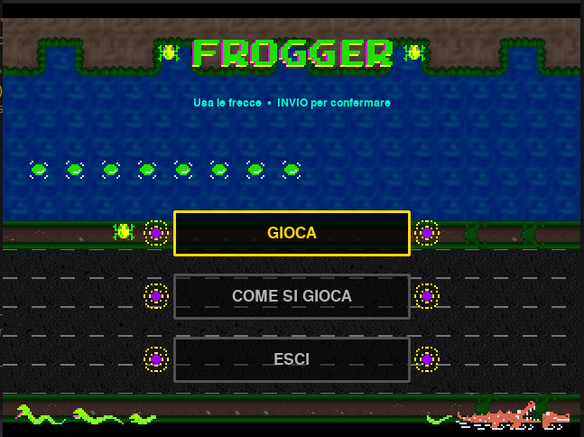
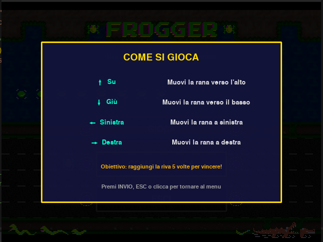
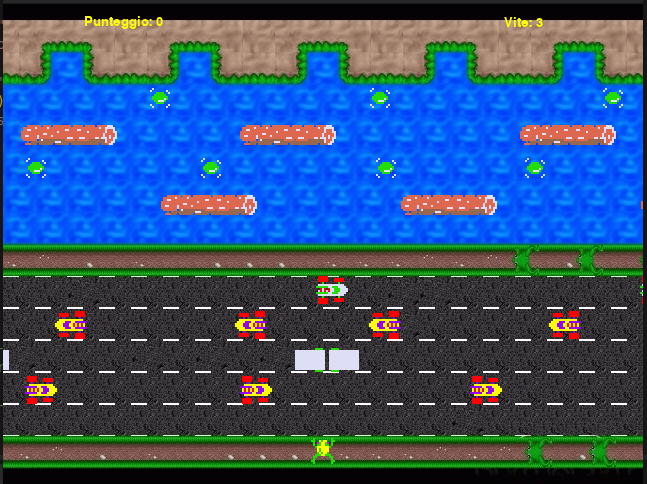

Questa è la mia versione personale del classico Frogger,dove devi guidare la rana attraverso strada e fiume, evitando ostacoli e nemici in movimento, per raggiungere l'altra sponda senza farti travolgere.
Il gioco nasce in Giappone, dove Konami all'epoca voleva affiancare al suo già celebre Pac-Man un titolo diverso, questa volta con un protagonista "reale" invece che un personaggio di fantasia, sfruttando al meglio la potenza degli arcade del periodo. Il gioco uscì per la prima volta in Giappone nel giugno 1981, riscuotendo subito un grande successo. Negli Stati Uniti arrivò poco dopo tramite Sega/Gremlin, con debutto ufficiale il 23 ottobre 1981. L'idea di base era volutamente semplicissima: guidare una rana attraverso una strada trafficata e poi un fiume pieno di insidie, per raggiungere delle "tane" sicure sull'altro lato — niente armi né nemici da eliminare, solo tempismo e precisione nei salti. Proprio questa immediatezza fu il segreto del successo: i giocatori furono attratti dal gameplay originale e dalla grafica colorata, e il titolo divenne rapidamente uno dei grandi classici arcade della storia, al fianco di nomi come Pac-Man e Asteroids. Un aneddoto curioso riguarda proprio l'origine del concept: per decenni ha girato la leggenda secondo cui l'idea sarebbe nata a un dipendente Konami che per poco non investì con l'auto una rana intenta ad attraversare la strada. È una storia affascinante, ma recenti ricerche condotte nel dicembre 2025 da un ex sound designer Konami hanno smentito questa versione, non risultando alcun dipendente con quel nome coinvolto nel progetto originale — un piccolo mistero della storia videoludica risolto solo di recente, a oltre 40 anni dall'uscita del gioco.
| Freccie direzionali | Muovi la rana |
| R | Riavvia la partita |
| Esc | Esci dal gioco |